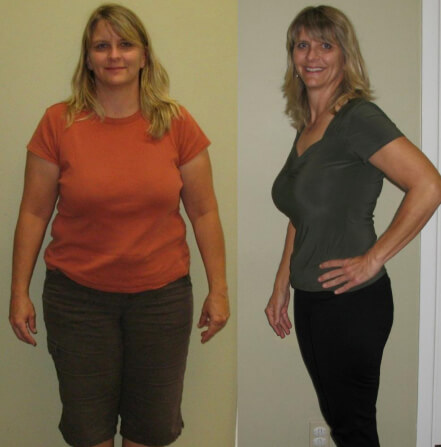
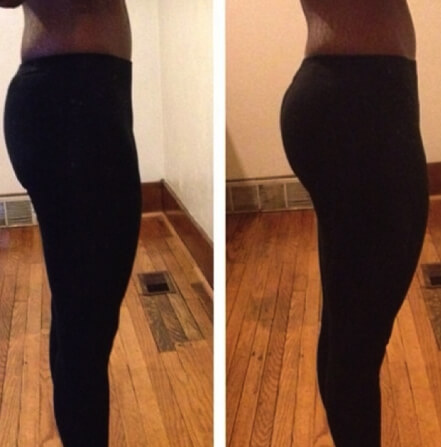
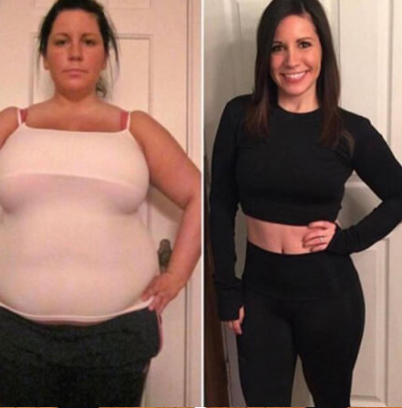
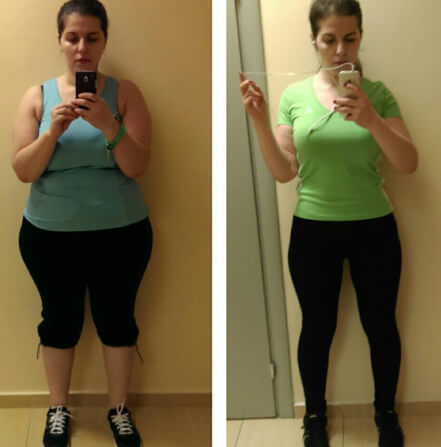
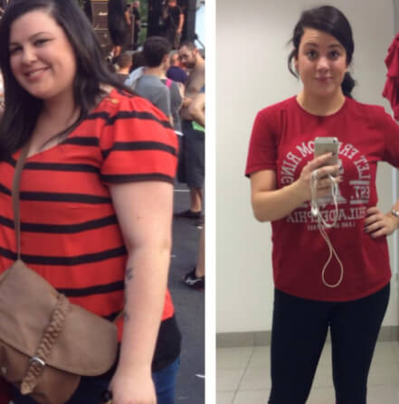

 Le gustó a stanly_34 y 1967 más
Le gustó a stanly_34 y 1967 más
anny_sun
Tengo cuerpo como reloj de arena, por lo tanto, mis zonas más problemáticas son las nalgas y las caderas. La grasa en las mismas se acumula muy rápido, es casi imposible quitarla. Compré estos leggins perfectos y a una semana ya noté haber bajado de peso en caderas, cuyo volumen bajó unos 7cm !!! Gracias, muchas gracias!
poula_kass
Barcelona, España

Le gustó a juanito_ y 2301 más
poula_kass Soy entrenador de fitness y me entero muy bien de cuántos esfuerzos debe hacer uno para tener cuerpo bonito. Compré estos leggins para usarlos entre los entrenamientos y durante las vacaciones.
Porque si uno es deportista profesional y deja de hacer deporte por lo menos una semana, enseguida sube de peso y ya no está en forma.
X-Leggins
son simplemente un descubrimiento, corresponden totalmente a todas las características declaradas. Ahora desarrollo un curso de fitness con estos leggins. Chicas, pronto seréis todas muy guapas.

ellenafigga
Salamanca, España

 Le gustó a silensio_12 y 1540 más
Le gustó a silensio_12 y 1540 más
ellenafigga Cuanto más mayor se hace uno, más complicado es guardar lo mejor. Compré los leggins X-Leggins, porque el productor me prometió no solamente quitar la celulitis, sino también quitar el cansancio de piernas. Trabajo en una tienda y paso todo el día de pie. Era importante para mí. Estoy muy contenta. Me siento una niña, he quitado la grasa del vientre y de caderas, tengo nalgas más firmes, las pantorrillas se hicieron más firmes y esbeltas. Pero lo que más me alegra es la sensación de ligereza increíble en las piernas. ¡Recomiendo a todos X-Leggins!

flaco_mary
Ciudad Real, España

Le gustó a hellena_paola y 3541 más
flaco_mary Tuve una tarea difícil de cumplir – perder el peso 2 semanas antes de la boda,
Casi me decidí por la liposucción, pero enseguida leí sobre X-Leggins. Y aquí tengo mi receta para
Vds: póngase estos leggins, corra en un parque unos 30 minutos, y luego camine una hora más a casa.
En 2 semanas quité totalmente la grasa del vientre, nalgas y caderas. En total perdí más de 17 kg,
y en cm - 10 del vientre y 12 de caderas!!!
Malena P.
Sevilla, España

 Le gustó a knight_bor y 741 más
Le gustó a knight_bor y 741 más
Malena P. La celulitis y la grasa por los lados son asquerosos.
Tanto que me da vergüenza ir a la piscina y a la playa. Antes solía hacerme
el masaje, pero es un procedimiento muy doloroso después del cual quedan los
morados horrorosos. Hace 2 semanas decidí usar los leggins X-Leggins. Los
usaba todos los días unas 3 horas
(los usaba solo cuando estaba en casa o iba a comprar). ¡Es fascinante! ¡La
celulitis no desapareció totalmente, pero fue reducida un 90%!!
 Mejora el
Mejora el